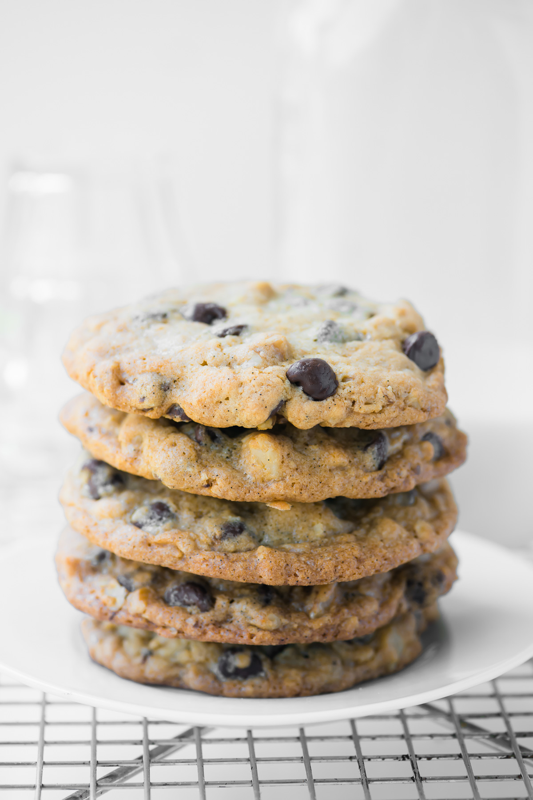

Double Tree Chocolate Chip Cookies
Hilton's offical recipe for their famous chocolate chip cookies. Adapted from The View From Great Island

Ingredients
- 1 Cup Unsalted Butter
- 3/4 Cup Granulated Sugar
- 3/4 Cup Brown Sugar
- 2 Eggs
- 1 1/4 Teaspoon Vanilla Extract
- 1/4 Teaspoon Lemon Juice
- 2 1/4 Cup All Purpose Flour
- 1/2 Cup Rolled Oats
- 1 Teaspoon Baking Soda
- 1/4 Teaspoon Cinnamon
- 1 Teaspoon Salt
- 2 2/3 Cup Semi Sweet Chocolate Chips
- 1 3/4 Cup Chopped Walnuts
Instructions
- Preheat oven to 300F
- Cream the soft butter, both sugars in a stand mixer for 2 minutes until light and fluffy
- Beat in eggs, vanilla, and lemon juice. Beat for 2 more minutes
- Lower the speed and blend in the flour, oats, baking soda, cinnamon and salt
- Fold in the chocolate chips and walnuts
- Use an ice cream scoop to scoop out the dough and place 2 inches apart on lined cookie sheets
- Bake for 20-23 minutes until golden brown
- Let the cookies cool on the baking sheets for 15 minutes, then transfer to a cooling rack